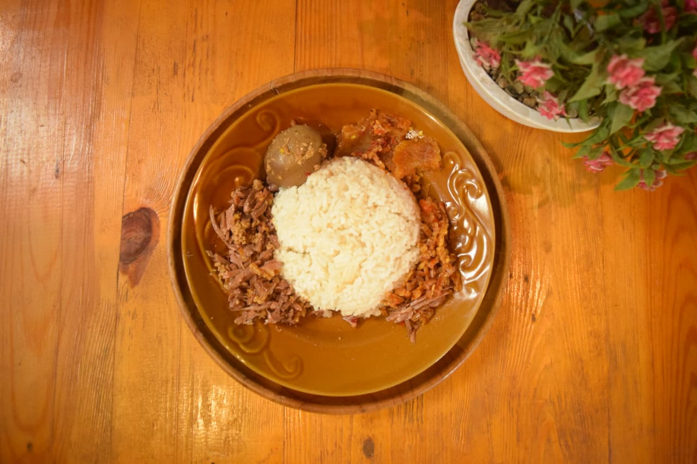
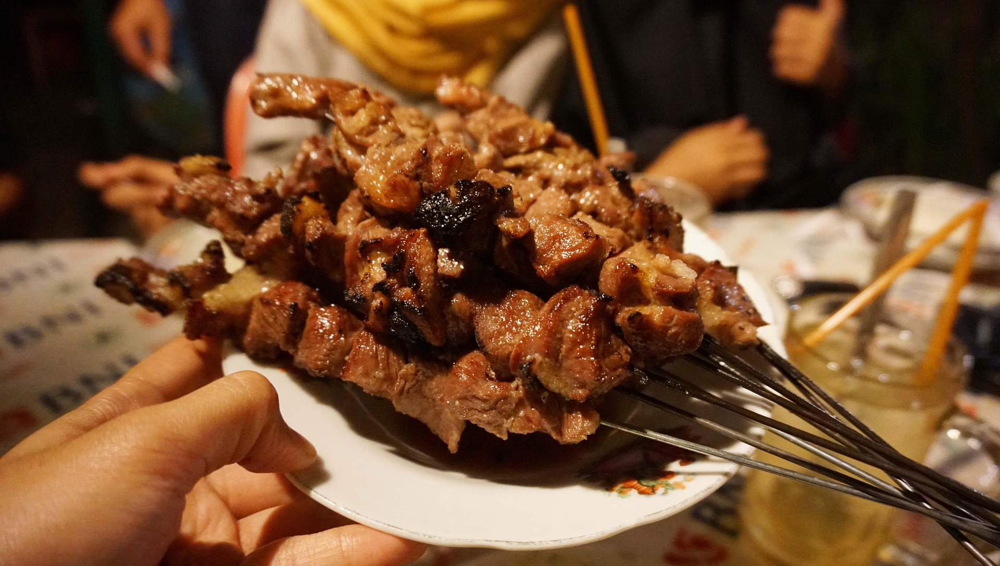

Kuliner
Tiga sajian khas Yogyakarta yang wajib dicicipi selama perjalanan Anda.

Gudeg
Makanan khas Jogja berbahan dasar nangka muda yang dimasak lama dengan santan dan gula jawa, menghasilkan cita rasa manis-gurih dan biasa disajikan bersama krecek pedas, telur, serta ayam bacem.

Bakpia Pathok
Kue olahan tepung berlapis khas Jogja dengan isian kacang hijau, cokelat, atau keju yang memiliki tekstur renyah di luar dan lembut di dalam, cocok sebagai camilan maupun oleh-oleh.

Sate Klatak
Sate kambing muda unik khas Imogiri yang ditusuk menggunakan jeruji besi sepeda agar matang merata, dibumbui simpel dengan garam, lalu disajikan bersama kuah gulai yang gurih berempah.